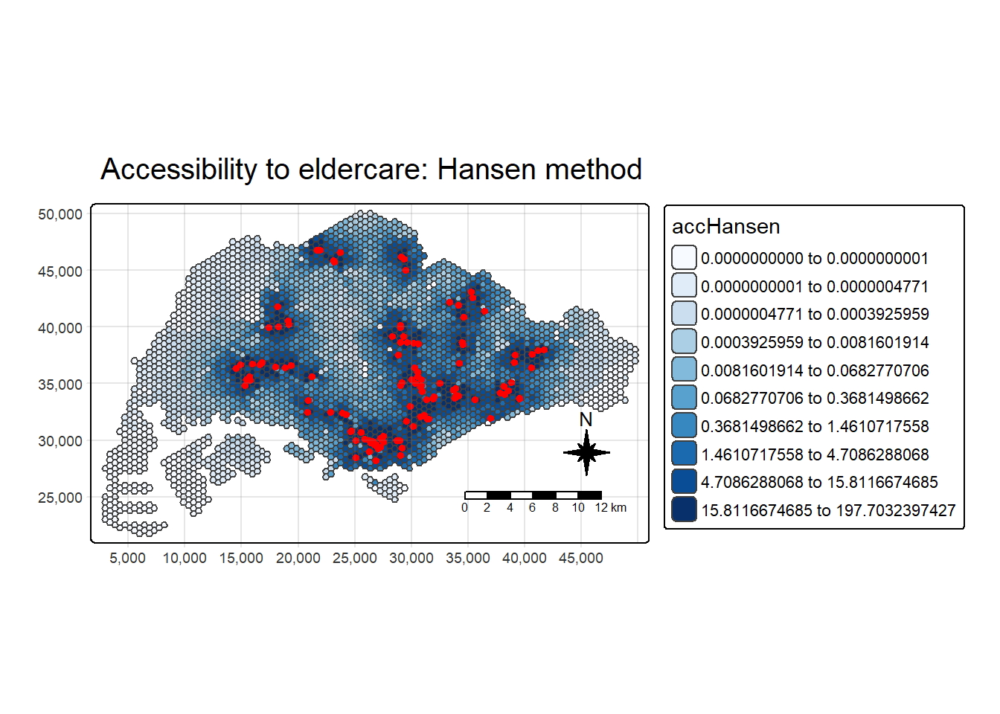
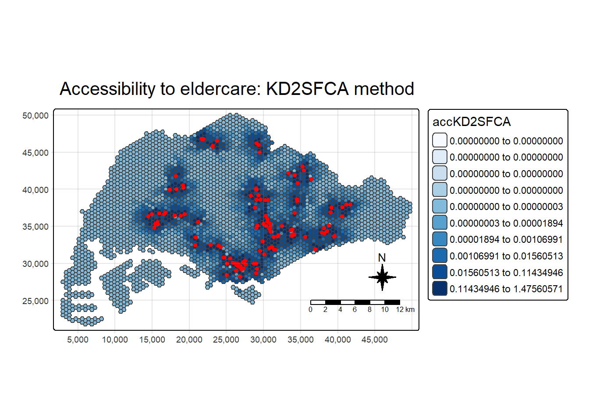
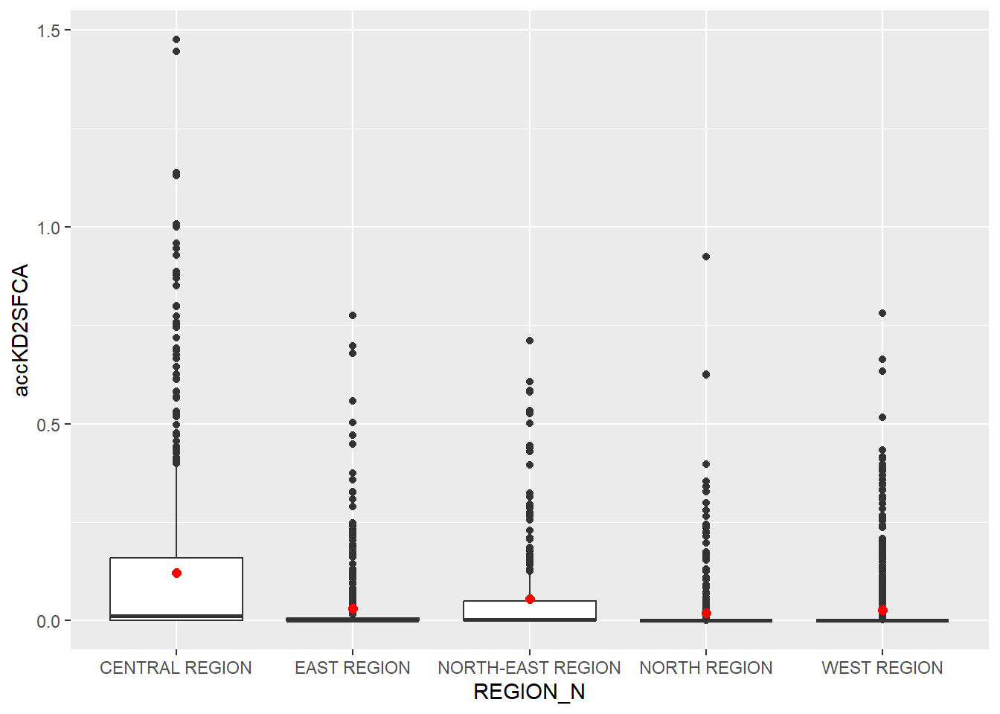
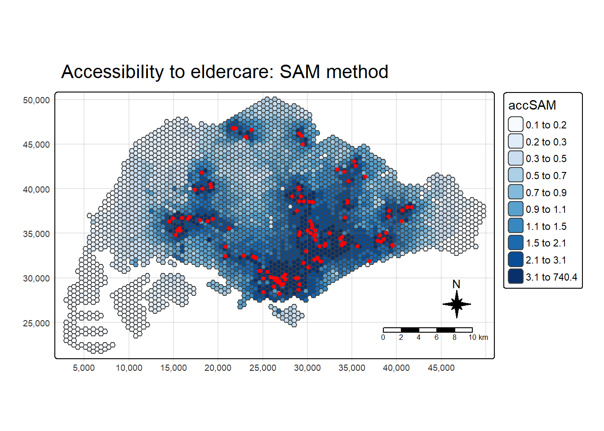

pacman::p_load(tmap, SpatialAcc, sf,
ggstatsplot, reshape2,
tidyverse)Hands-on_Ex09
Getting Started
In this hands-on exercise, we’ll explore how to model geographical accessibility using R’s geospatial analysis packages.
Import Libraries
The libraries we’ll be using in this hands-on exercise are:
sf: simple features in R to encode and analyze spatial vector data
tmap: used to draw thematic map
tidyverse: collection of R packages that for data manipulation and visualization
SpatialAcc: provide set of spatial accessibility measure from set of location (demand) to another set of locations (supply)
ggstatsplot: create graphics wth details from statistical test
reshape2: manipulate data from wide to long format
The Data
The datasets used for this hands-on exercise are the following:
MP14_SUBZONE_NO_SEA_PL: URA Master Plan 2014 subzone boundary GIS data (from data.gov.sg)
hexagons: 250m radius hexagon GIS data (created using st_make_grid())
ELDERCARE: GIS data showing location of eldercare service (from data.gov.sg)
OD_MatrixL distance matrix in csv format with six fields:
origin_id: unique if values of origin (i.e. fid of hexagon data set)
destination_id: the unique id values of the destination (i.e. fid of ELDERCARE data set)
entry_cost: perpendicular distance between the origins and nearest road
network_cost: actual network distance from the origin and destination
exit_cost: perpendicular distance between destination and nearest road
total_cost: summation of entry_cost, network_cost and exit_cost
Import Data
We’ll import the MP14_SUBZONE_NO_SEA_PL, hexagons and EDLERCARE file using st_read()
mpsz <- st_read(dsn = "data/geospatial", layer = "MP14_SUBZONE_NO_SEA_PL")Reading layer `MP14_SUBZONE_NO_SEA_PL' from data source
`C:\stefanie-fel\ISSS626-GAA\Hands-on_Ex\Hands-on_Ex09\data\geospatial'
using driver `ESRI Shapefile'
Simple feature collection with 323 features and 15 fields
Geometry type: MULTIPOLYGON
Dimension: XY
Bounding box: xmin: 2667.538 ymin: 15748.72 xmax: 56396.44 ymax: 50256.33
Projected CRS: SVY21hexagons <- st_read(dsn = "data/geospatial", layer = "hexagons") Reading layer `hexagons' from data source
`C:\stefanie-fel\ISSS626-GAA\Hands-on_Ex\Hands-on_Ex09\data\geospatial'
using driver `ESRI Shapefile'
Simple feature collection with 3125 features and 6 fields
Geometry type: POLYGON
Dimension: XY
Bounding box: xmin: 2667.538 ymin: 21506.33 xmax: 50010.26 ymax: 50256.33
Projected CRS: SVY21 / Singapore TMeldercare <- st_read(dsn = "data/geospatial", layer = "ELDERCARE") Reading layer `ELDERCARE' from data source
`C:\stefanie-fel\ISSS626-GAA\Hands-on_Ex\Hands-on_Ex09\data\geospatial'
using driver `ESRI Shapefile'
Simple feature collection with 120 features and 19 fields
Geometry type: POINT
Dimension: XY
Bounding box: xmin: 14481.92 ymin: 28218.43 xmax: 41665.14 ymax: 46804.9
Projected CRS: SVY21 / Singapore TMData Preparation
Next, we’ll update the imported sf files into 3414 ESPG code.
mpsz <- st_transform(mpsz, 3414)
eldercare <- st_transform(eldercare, 3414)
hexagons <- st_transform(hexagons, 3414)After transforming the projection metadata, we’ll verify the projected coordinate system to confirm if it had been transformed into the correct ESPG code.
st_crs(mpsz)Coordinate Reference System:
User input: EPSG:3414
wkt:
PROJCRS["SVY21 / Singapore TM",
BASEGEOGCRS["SVY21",
DATUM["SVY21",
ELLIPSOID["WGS 84",6378137,298.257223563,
LENGTHUNIT["metre",1]]],
PRIMEM["Greenwich",0,
ANGLEUNIT["degree",0.0174532925199433]],
ID["EPSG",4757]],
CONVERSION["Singapore Transverse Mercator",
METHOD["Transverse Mercator",
ID["EPSG",9807]],
PARAMETER["Latitude of natural origin",1.36666666666667,
ANGLEUNIT["degree",0.0174532925199433],
ID["EPSG",8801]],
PARAMETER["Longitude of natural origin",103.833333333333,
ANGLEUNIT["degree",0.0174532925199433],
ID["EPSG",8802]],
PARAMETER["Scale factor at natural origin",1,
SCALEUNIT["unity",1],
ID["EPSG",8805]],
PARAMETER["False easting",28001.642,
LENGTHUNIT["metre",1],
ID["EPSG",8806]],
PARAMETER["False northing",38744.572,
LENGTHUNIT["metre",1],
ID["EPSG",8807]]],
CS[Cartesian,2],
AXIS["northing (N)",north,
ORDER[1],
LENGTHUNIT["metre",1]],
AXIS["easting (E)",east,
ORDER[2],
LENGTHUNIT["metre",1]],
USAGE[
SCOPE["Cadastre, engineering survey, topographic mapping."],
AREA["Singapore - onshore and offshore."],
BBOX[1.13,103.59,1.47,104.07]],
ID["EPSG",3414]]Clean and Update Attribute Fields of Geospatial Data
There are redundant fields in both eldercare and hexagons data table, we’ll exclude the redundant fields and create new field named demand and capacity into both hexagons and eldercare sf dataframe.
eldercare <- eldercare %>%
select(fid, ADDRESSPOS) %>%
mutate(capacity = 100)hexagons <- hexagons %>%
select(fid) %>%
mutate(demand = 100)Import Distance Matrix
Next, we’ll import the OD_Matrix file using read_csv
ODMatrix <- read_csv("data/aspatial/OD_Matrix.csv", skip = 0)Tidying Distance Matrix
Next, we’ll use spread() to transform the O-D matrix from a thin format into a fat format as it is currently still in distance matrix columnwise (column = destination, row = origins).
distmat <- ODMatrix %>%
select(origin_id, destination_id, total_cost) %>%
spread(destination_id, total_cost)%>%
select(c(-c('origin_id')))Since, the distance is measured in metre because SVY21 projected coordinate system is used, we’ll convert the unit f measurement from metre to kilometre.
distmat_km <- as.matrix(distmat/1000)Modelling and Visualizing Accessibility using Hansen Method
First, we’ll compute Hansen’s accesibility using ac().
acc_Hansen <- data.frame(ac(hexagons$demand,
eldercare$capacity,
distmat_km,
#d0 = 50,
power = 2,
family = "Hansen"))Since the field name is messy, we’ll rename it to accHansen
colnames(acc_Hansen) <- "accHansen"Next, we’ll convert it into tibble format
acc_Hansen <- as_tibble(acc_Hansen)We’ll bind the acc_Hansen with hexagon sf object
hexagon_Hansen <- bind_cols(hexagons, acc_Hansen)
hexagon_HansenSimple feature collection with 3125 features and 3 fields
Geometry type: POLYGON
Dimension: XY
Bounding box: xmin: 2667.538 ymin: 21506.33 xmax: 50010.26 ymax: 50256.33
Projected CRS: SVY21 / Singapore TM
First 10 features:
fid demand accHansen geometry
1 1 100 1.648313e-14 POLYGON ((2667.538 27506.33...
2 2 100 1.096143e-16 POLYGON ((2667.538 25006.33...
3 3 100 3.865857e-17 POLYGON ((2667.538 24506.33...
4 4 100 1.482856e-17 POLYGON ((2667.538 24006.33...
5 5 100 1.051348e-17 POLYGON ((2667.538 23506.33...
6 6 100 5.076391e-18 POLYGON ((2667.538 23006.33...
7 7 100 1.769616e-13 POLYGON ((3100.551 28756.33...
8 8 100 9.979647e-14 POLYGON ((3100.551 28256.33...
9 9 100 5.671831e-14 POLYGON ((3100.551 27756.33...
10 10 100 2.621063e-14 POLYGON ((3100.551 27256.33...Visualize Hansen’s Accessibility
First, we’ll extract the extend of hexagons sf object using st_bbox()
mapex <- st_bbox(hexagons)And we’ll visualize accessibility to eldercare centre in Singapore using tmap.
tm_shape(hexagon_Hansen,
bbox = mapex) +
tm_polygons(fill = "accHansen",
fill.scale = tm_scale_intervals(
style = "quantile",
n = 10,
values = "brewer.blues")) +
tm_shape(eldercare) +
tm_dots(size = 0.3,
fill = "red",
col = "black") +
tm_title("Accessibility to eldercare: Hansen method") +
tm_layout(frame = TRUE) +
tm_compass(type="8star", size = 2) +
tm_scalebar() +
tm_grid(alpha = 0.2)
Statistical Graphic Visualization
In this section, we’ll compare the distribution of Hansen’s accessibility values by URA Planning Region.
First, we’ll add the planning region field to hexagon_Hansen sf
hexagon_Hansen <- st_join(hexagon_Hansen, mpsz,
join = st_intersects)Next, we’ll visualize the distribution using boxplot graphical method
ggplot(data=hexagon_Hansen,
aes(y = log(accHansen),
x= REGION_N)) +
geom_boxplot() +
geom_point(stat="summary",
fun.y="mean",
colour ="red",
size=2)
Model and Visualize Accessibility using KD2FCA Method
Compute KD2SFCA’s Accessibility
In this section, we’ll calculates Hansen’s accessibility using ac()
acc_KD2SFCA <- data.frame(ac(hexagons$demand,
eldercare$capacity,
distmat_km,
d0 = 5,
power = 2,
family = "KD2SFCA"))
colnames(acc_KD2SFCA) <- "accKD2SFCA"
acc_KD2SFCA <- as_tibble(acc_KD2SFCA)
hexagon_KD2SFCA <- bind_cols(hexagons, acc_KD2SFCA)Visualize KD2SFCA’s Accessibility
Next, we’ll use tmap to visualize eldercare centre in Singapore using tmap.
tm_shape(hexagon_KD2SFCA,
bbox = mapex) +
tm_polygons(fill = "accKD2SFCA",
fill.scale = tm_scale_intervals(
style = "quantile",
n = 10,
values = "brewer.blues")) +
tm_shape(eldercare) +
tm_dots(size = 0.3,
fill = "red",
col = "black") +
tm_title("Accessibility to eldercare: KD2SFCA method") +
tm_layout(frame = TRUE) +
tm_compass(type="8star", size = 2) +
tm_scalebar() +
tm_grid(alpha = 0.2)
Statistical Graphic Visualization
Next, we’ll compare the distribution of KD2CFA accessibility values by URA Planning Region
First, we’ll add planning region field to hexagon_KD2FCA sf dataframe
hexagon_KD2SFCA <- st_join(hexagon_KD2SFCA, mpsz,
join = st_intersects)Next., we’ll use ggplot() to plot the distribution using boxplot.
ggplot(data=hexagon_KD2SFCA,
aes(y = accKD2SFCA,
x= REGION_N)) +
geom_boxplot() +
geom_point(stat="summary",
fun.y="mean",
colour ="red",
size=2)
Model and Visualize Accessibility using Spatial Accessibility Measure Method
Compute SAM Accesibility
In this section, we’ll compute SAM accesibility using ac(), but with family = "SAM".
acc_SAM <- data.frame(ac(hexagons$demand,
eldercare$capacity,
distmat_km,
d0 = 5,
power = 2,
family = "SAM"))
colnames(acc_SAM) <- "accSAM"
acc_SAM <- as_tibble(acc_SAM)
hexagon_SAM <- bind_cols(hexagons, acc_SAM)Visualize SAM’s Accessibility
We’ll visualize the eldercare accessibility using SAM accessibility method.
tm_shape(hexagon_SAM,
bbox = mapex) +
tm_polygons(fill = "accSAM",
fill.scale = tm_scale_intervals(
style = "quantile",
n = 10,
values = "brewer.blues")) +
tm_shape(eldercare) +
tm_dots(size = 0.3,
fill = "red",
col = "black") +
tm_title("Accessibility to eldercare: SAM method") +
tm_layout(frame = TRUE) +
tm_compass(type="8star", size = 2) +
tm_scalebar() +
tm_grid(alpha = 0.2)
Statistical Graphic Visualization
Next, we’ll compare the distribution of SAM accessibility values by URA Planning Region.
First, we’ll add planning region field to hexagon_SAM sf
hexagon_SAM <- st_join(hexagon_SAM, mpsz,
join = st_intersects)We’ll use ggplot() to plot distribution using boxplot.
ggplot(data=hexagon_SAM,
aes(y = accSAM,
x= REGION_N)) +
geom_boxplot() +
geom_point(stat="summary",
fun.y="mean",
colour ="red",
size=2)